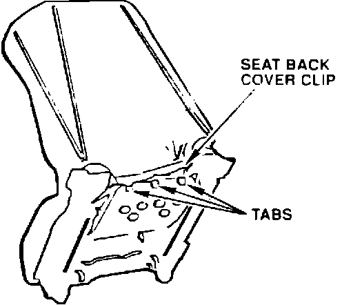
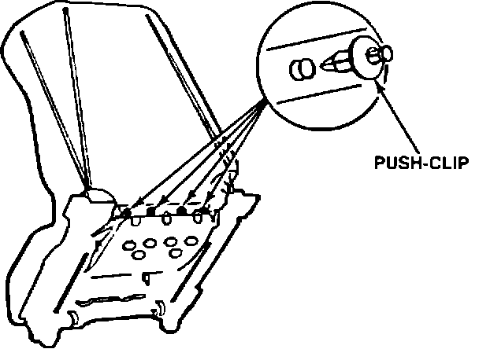

Seat Back - Broken Cover Clip
90acura03YEAR MODEL VIN APPLICATION
1991 NSX ALL
November 26, 1990
BULLETIN NO.
90-026

Broken Seat Back Cover Clip
PROBLEM
The tabs on the seat back cover clip break off leaving the bottom of the cover loose.
CORRECTIVE ACTION
Secure the seat back cover clip with the push-clips listed under PARTS INFORMATION.
1. Slide the seat fully forward, then remove the two rear seat mounting bolts. Slide the seat fully rearward, then remove the two front seat mounting bolts. Remove the lower seat belt anchor bolt. Adjust the seat back to full recline, disconnect the seat wire harness, then remove the seat.
2. Place the seat on a clean. smooth surface with the headrest down and the white plastic seat back cover clip up.

3. Position the white plastic seat back cover clip in its original position. then drill four 8.5 mm holes through the clip and the aluminum seat bucket (one hole on either side of the original tab locations).
4. Insert a push-clip in each hole and secure by pushing in the pin.
NOTE: The clips can be removed by pushing the pin in further.
PARTS INFORMATION
Clip Assembly. 8 mm. P/N 91545-SE0-003 (four per seat)
WARRANTY CLAIM INFORMATION
In warranty: The normal warranty applies.
Out-of-warranty: Any repair performed after warranty expiration may be eligible for goodwill consideration by the District Service Manager. You must request consideration, and get the DSM's decision, before starting work.
Operation numberi 860125 (left)
862125 (right)
Flat rate timei 0.7 hour
Failed P/N: 81500-SL0-A01ZA
Defect code: 018
Contention code: A02